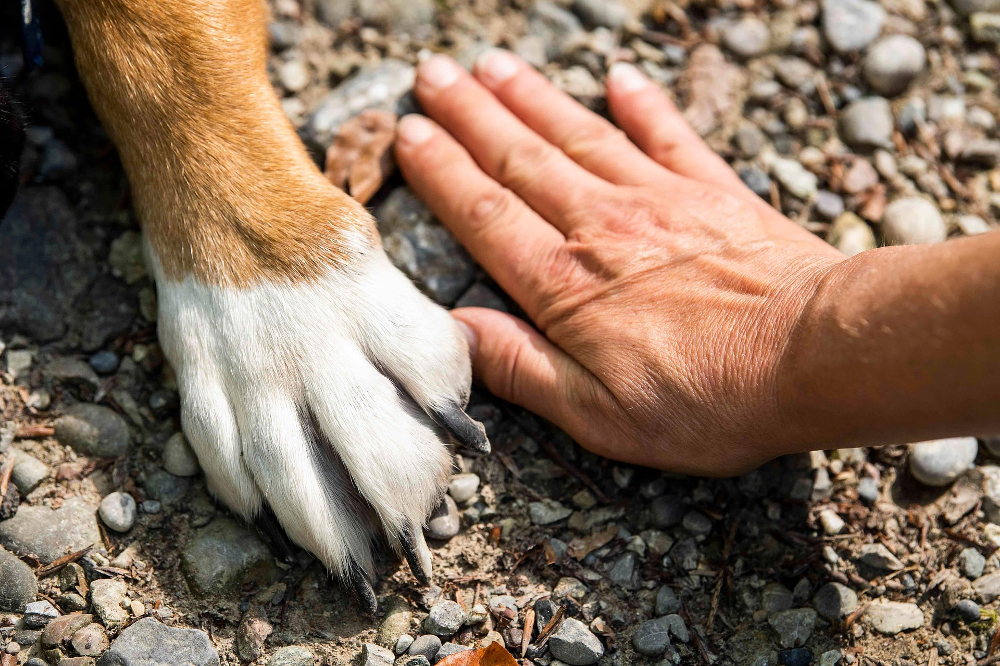
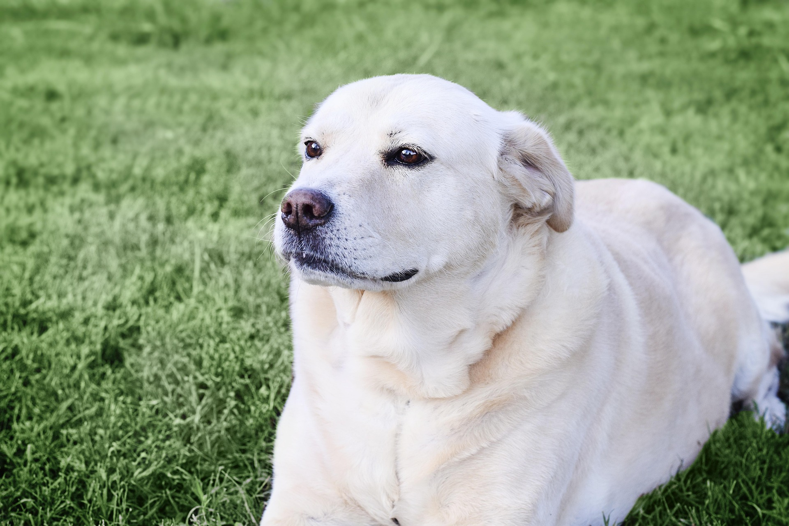

Welcome to Pawsitive Rescue.
At Pawsitive Rescue, we believe every paw deserves a home — and every home can be made brighter by the love of a rescue animal.

Our Mission
Our mission is simple: to rescue, rehabilitate, and rehome animals in need while promoting responsible pet ownership through education and community outreach.
Featured Pet

Bailey, 2 years old. She is an energetic and loyal companion who loves belly rubs and long walks.